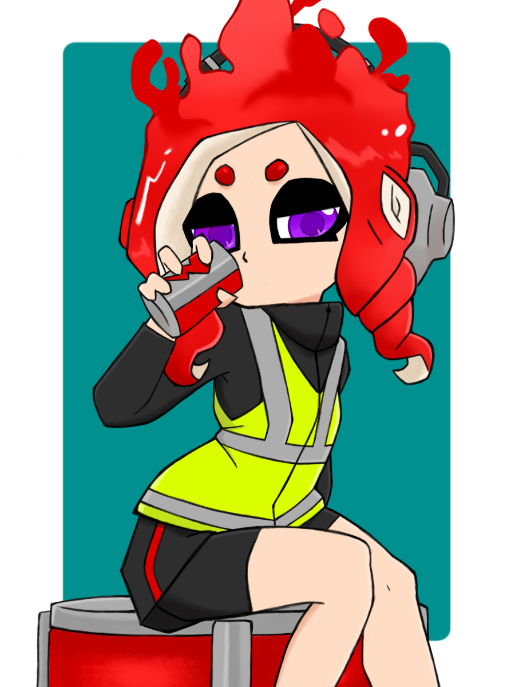

Splatos
Equipe/Pick-Up
Participations :
Soul League
Soul Cup
Exemple
Tournoi de Saison : Saison des averses 2023 | 5e place avec la Ink Souls : Roster Maria
| Statistiques Soul League | Saison 1 | |||||||
|---|---|---|---|---|---|---|---|
| Splatos | Manches Gagnées | Manches Perdues | Kills | Assists | Morts | Points d'Encrages | Armes Spéciales |
| Globale | 9 | 4 | 116 | 20 | 97 | 11 004 | 35 |
| Pourcentages | % | % | % | % | % | % | % |
| Moyennes | 9 | 4 | 116 | 20 | 97 | 11 004 | 35 |
| Statistiques Soul Cup | Saison 2023-2024 - Total | |||||||
|---|---|---|---|---|---|---|---|
| Splatos | Manches Gagnées | Manches Perdues | Kills | Assists | Morts | Points d'Encrages | Armes Spéciales |
| Globale | 0 | 0 | 0 | 0 | 0 | 0 | 35 |
| Moyennes | 9 | 4 | 116 | 20 | 97 | 11 004 | 35 |